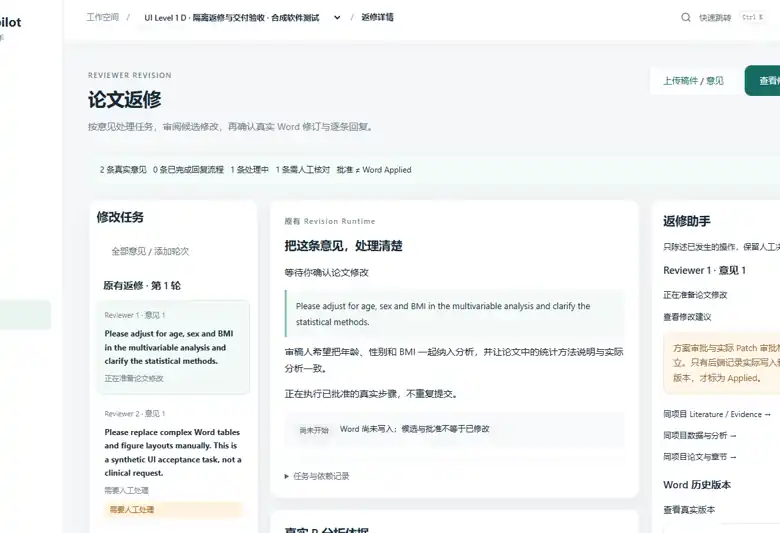
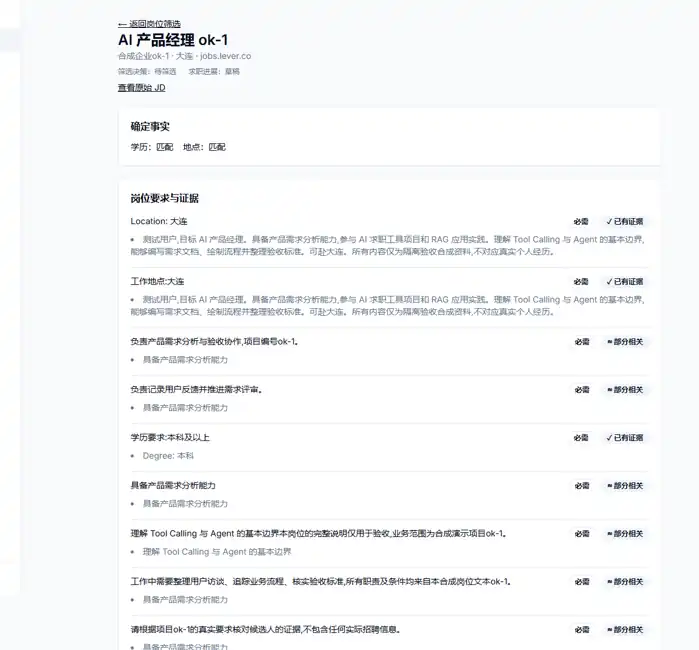
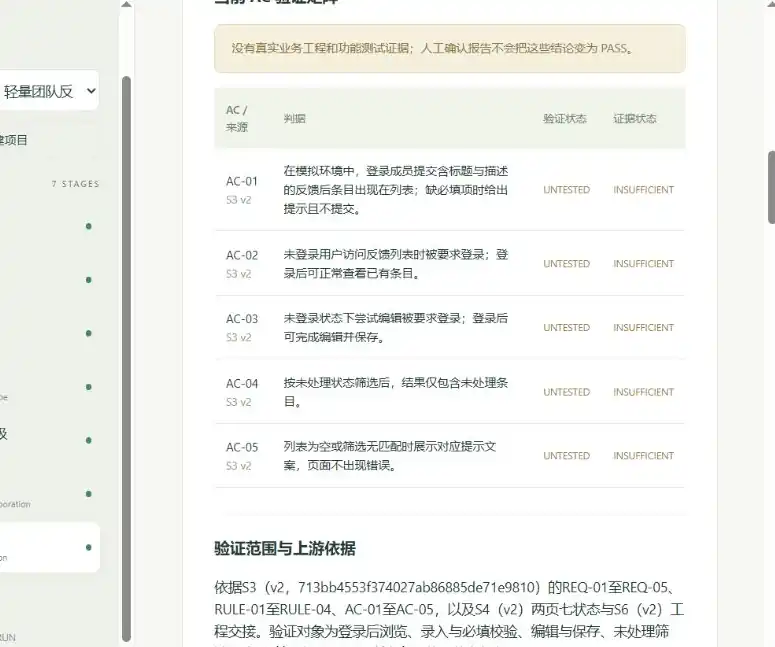

01 / NN-COPILOT个人项目 · 本地 MVP
NN-Copilot
医学科研场景中，可靠性优先于“全自动”。
从医学论文初稿和返修两种任务出发，设计统一 Research Project，采用真实 R 分析与两次人工确认，避免模型输出直接变成科研事实。
我负责评审需求、功能范围和人工确认规则；协同 ChatGPT 细化文档、Codex 实现与测试
可核验证据本地合成场景测试；统计结果与文稿一致性、R 分析及 Word 交付已核验
查看案例与真实截图 物联网工程本科，曾在企业数字化场景参与 Text-to-SQL 的 Prompt 方案对比、知识库配置与 SQL 结果检查。通过三个 AI 应用个人项目，持续实践用户问题分析、MVP 取舍、研发协作与阶段验收。
个人联系方式不直接铺陈；点击「邮箱联系」可查看并复制邮箱地址，详细信息可通过「查看简历」获取。
需求证据判断、竞品价值分析、MVP 取舍、AI 辅助 PRD 与验收规则
Prompt / Context、结构化输出、Workflow、SQL 结果对照与模型输出检查
本人主导产品判断和人工验收，借助 ChatGPT、Codex 等工具推进交付
以下是个人项目，不是企业全职岗位经历；点击案例可查看我参与的产品决策、经验证的界面和仍然存在的限制。

医学科研场景中，可靠性优先于“全自动”。
从医学论文初稿和返修两种任务出发，设计统一 Research Project，采用真实 R 分析与两次人工确认，避免模型输出直接变成科研事实。

岗位发现与岗位匹配，不该只有一个分数。
把职位发现、JD 核查、证据匹配和投递决策组织成统一流程。解决的不仅是信息整理，也包括 AI 判断依据与异常结果的处理。

让已确认的产品决策在迭代中持续有效。
把产品发现、定义、PRD、原型、计划、交接、验证组织成连续流程；通过版本引用和失效传播，控制需求变更对下游的影响。
聚焦医学科研论文初稿与审稿意见返修。两条独立入口共用一个 Research Project，不必强制先研究设计才能修改已有稿件。
模型提供方案、辅助结构化解释，研究者确认分析计划后再运行 R。数值与统计结论要能够反查真实分析记录。
方案审批与 Patch 应用审批相互独立。只有在真实 Word 生成并核验后才显示 Applied，并保留原稿、修订痕迹和历史版本。
在 SBP 扩展分析与文稿不一致的问题中，先确认研究决策再重新分析。正式期刊终稿与投稿验证明确不属于 MVP。
起点是本人求职过程中反复跨平台找岗位、对照 JD 与经历、管理投递状态的真实困难。尚未以外部访谈证明这是规模化市场需求。
岗位要求逐条匹配简历证据，呈现 matched、partial、no_evidence 等状态，而非把单一分数伪装成投递成功概率。
网页搜索遇到摘要、列表和动态页面时，保留为「待核实线索」。只有获得可信单岗信息并经人工确认后，才进入岗位库。
曾把项目经历时长误判为全职工龄。明确区分项目与 WorkExperience，以结构化年限证据修复，不把个人项目算成正式工作年限。
在跨多轮的 AI 产品讨论与开发协作中，已确认的需求和规则容易丢失。项目把 S1–S7 的上游批准、下游引用与变更失效关联起来，而不是仅生成七份文档。
生成成果不等于批准的产品决策；正式阶段引用精确版本，上游变化会使受影响下游成果进入待复核状态。
“匿名可浏览”变为“浏览也必须登录”。一次模型生成违反规则文本被拒，重试后 S3 v2 确认，旧版保留并将后续阶段标为 stale。
ChatGPT 参与产品定义，Codex 组织实施、测试与审查，PO 审批和操作。但一次 Demo 不足以证明多 Agent 开发提效百分比。
我希望证明的是从发现问题到推动验证的基本能力，而不是把 AI 生成的成果全部算成个人独立编程。
明确真实观察与假设，梳理用户流程、竞品替代方案和价值边界。
区分模型生成、规则判断和人工批准，优先围绕关键风险收敛第一版。
与 ChatGPT、Codex 协作梳理 PRD、验收规则与测试计划，个人负责重要方案审核和范围取舍。
使用标准 SQL / 预期结果检查模型输出；对项目中的真实问题和限制保留验收记录。
三个项目均为个人产品实践。我主要承担产品定义、方案取舍、需求与规则设计、开发交接、人工验收和复盘；ChatGPT 协助产品讨论与文档，Codex 等 AI Coding 工具主要参与代码开发与自动化测试。它们不等同于正式企业产品岗位经历。
物联网工程本科、计算机网络技术专科。实习参与 Text-to-SQL 模型输出测试与知识库参数配置，同时参与社区超市的采购、供应商沟通、线上直播和门店商品管理。希望进入真正开展需求分析、产品设计和协作交付的团队。
AI 数据分析师（实习）
管理数字化部参与 Text-to-SQL 前期探索：对比 DeepSeek Prompt 方案，用标准 SQL 与预期结果检查语法、字段和业务理解；验证知识库分块与 Temperature 设置，参与文档和汇报素材制作。非全职 · 真实门店实践
参与同福爆品店团购渠道、个人直播及抖音/微信群活动传播；协助采购、供应商沟通、销售数据查看、老库存清理与滞销品清退。物联网工程 · 本科
GPA 3.88 / 5，专业前 10%；优秀本科毕业设计。计算机网络技术 · 专科
GPA 3.68 / 5，专业前 10%；校级优秀毕业生、优秀学生标兵、二等奖学金。具备物联网与计算机网络基础
目标方向：AI 产品助理 / AI 应用产品经理 / 初级产品经理。详细个人信息请通过 V2 正式简历查看，联系方式由邮箱弹窗提供。